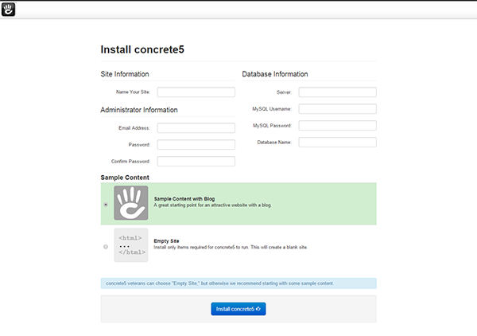
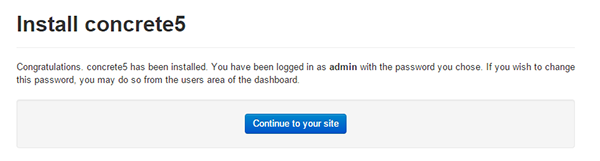
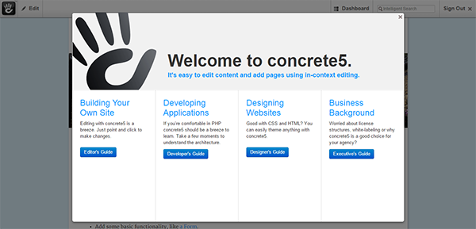

Install and configure concrete5 on your LAMP server - Debian, Ubuntu
Difficulty: 1
Time: 30 minutes
Introduction
Concrete5 is an open-source content management system (CMS) made in PHP. Concrete5 is easy to understand and learn. In this article you will learn, how to install and configure concrete5 on your LAMP server - Debian and Ubuntu.
Before you proceed, you must have access to sudo privileges to perform the steps mentioned in this article. In addition, you will need to build a LAMP stack by referring the following links:
Install the required dependency
- Install the unzip tool, which is required to extract the file.
sudo apt-get install unzip
- Install the PHP libraries for graphics and XML.
sudo apt-get install php5-gd
- Restart the Apache services to make the changes effective.
sudo service apache2 restart
Basic configuration
- Download the source of concrete5 from the official site:
Debian:
cd /var/www/
Ubuntu:
cd /var/www/html
sudo wget --trust-server-names http://www.concrete5.org/download_file/-/view/58379/8497/ -O concrete5.zip
- Extract the downloaded source.
sudo unzip concrete5.zip
- Rename the file
concrete5.6.2.1 as concrete5 to shorten the name.
sudo mv concrete5.6.2.1 concrete5
- Change directory to
concrete5.
cd concrete5
- Enable the
rewrite module.
sudo a2enmod rewrite
- Restart the Apache server.
sudo service apache2 restart
Create database
- Create a blank database for backend operation. Log into MySQL.
mysql -u root -p
- When prompted enter mysql password and create database.
CREATE DATABASE concrete5;
- Create the database administrator account, and set the user's credentials. We'll use "admin" as the example user name, and "adminpwd" as the password.
CREATE USER admin@localhost IDENTIFIED BY 'adminpwd';
As a best security practice, create a strong password. Keep your user name and password handy, as you'll need them later.
- Give, or grant, your admin permissions to the database.
GRANT ALL PRIVILEGES ON concrete5.* TO admin@localhost;
- GRANT is one of the account management statements that the MySQL server notices and loads into memory right away. Therefore, a manual reload/restart should not be necessary. However, if you like, you can check the permissions using SHOW GRANTS:
SHOW GRANTS FOR 'admin'@'localhost';
- If the privileges don't take, flush the privileges to activate the user. FLUSH forces a reload of the cache.
FLUSH PRIVILEGES;
- Exit MySQL to return to your normal command prompt.
exit
Grant Permissions
- Change ownership of the following items to make them writable for concrete5.
sudo chown -R www-data:www-data /var/www/html/concrete5
- Change permissions of the following folders.
sudo chmod -R 755 /var/www/html/concrete5
Install Concrete5
- In your web browser, type in the public IP or URL of your concrete5 server as http://server_ip/concrete5, and then press the Enter key.
- On the installation page, click Continue to Installation.

- Enter the required information for Site, Database, and Administrator, and then click Install concrete5.

- After the installation process is complete, click Continue to your site.

You will be redirected to the Welcome screen of concrete5.

- Select any of the guides to get started.
Conclusion
In this article, you have learned to install and configure concrete5 on your LAMP server.